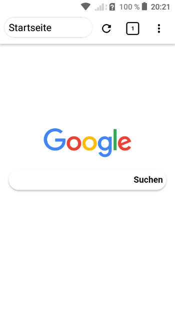

Tiempo estimado de lectura: 6 minutos. 769 palabras. android
Estoy encantado con Styx, un Navegador Open Source que aporta muchas características para mi necesarias que no tienen el resto y que verdaderamente muy completo.
La interfaz es muy amigable y la verdad es que me siento muy cómodo utilizándolo.

He hecho un copia y pega de las características, permisos necesarios,… disponible en el momento de la publicación, para que te hagas una idea más aproximada.
Te invito a visitar el repositorio en GitHub, donde encontrarás siempre las últimas características.
Instalación
Para instalarlo, descarga la última apk desde la release en GitHub, visita los repositorios de IzzyOnDroid o instala directamente una aplicación que acceda a los repositorios como Aurora Droid.
Características
Sesiones.
Administrador de pestañas.
Marcadores.
Historia.
Algunas sugerencias de búsqueda.
Soporte de teclado.
Tematización de la página web.
Representación de escritorio.
Modo de impresión.
Herramientas de página con herramientas útiles.
Editor de texto fuente de página.
Reenvío de aplicaciones de terceros.
Soporte de escritorio Android (Samsung Dex, EMUI Desktop).
Copia de seguridad / restauración para configuración y marcadores.
Varios modos de renderizado: invertido, alto contraste, escala de grises.
Configuraciones de apariencia y sensación específicas para retrato y paisaje.
Pull-to-refresh opcional.
Renderizado acelerado por hardware.
Configuración de administración de pestañas enriquecidas.
Recuperación de pestañas.
Panel de pestañas ordenables a pantalla completa.
Panel de marcadores básico, importación y exportación.
y mucho más…
Permisos
Otorgado automáticamente
INTERNET: necesario para acceder a internet.
ACCESS_NETWORK_STATE: utilizado por el navegador para detener la carga de recursos cuando se pierde el acceso a la red.
INSTALL_SHORTCUT: se utiliza para agregar accesos directos con la opción "Agregar a la pantalla de inicio".
Solicitado solo cuando sea necesario
WRITE_EXTERNAL_STORAGE: necesario para descargar archivos y exportar marcadores.
READ_EXTERNAL_STORAGE: necesario para descargar archivos e importar marcadores.
ACCESS_FINE_LOCATION: necesario para sitios como Google Maps, requiere que la opción "Acceso a la ubicación" esté habilitada (desactivada por defecto).
RECORD_AUDIO: necesario para admitir WebRTC, requiere que la opción "WebRTC Support" esté habilitada (desactivada por defecto).
CAMERA: necesario para admitir WebRTC, requiere que la opción "WebRTC Support" esté habilitada (desactivada por defecto).
MODIFY_AUDIO_SETTINGS: necesario para admitir WebRTC, requiere que la opción "WebRTC Support" esté habilitada (desactivada por defecto).
REQUEST_INSTALL_PACKAGES: necesario para admitir la instalación de APK, una vez finalizada la descarga.
Atajos de teclado
Ctrl + TAB: siguiente pestaña.
Ctrl + Shift + TAB: pestaña anterior.
Ctrl + Fn + TAB: pestaña anterior.
Ctrl + Alt + TAB: pestaña anterior.
Ctrl + 0 a 9: cambia al índice de pestaña especificado.
Ctrl + W: cierra la pestaña actual.
Ctrl + T: nueva pestaña.
Ctrl + F: buscar en la página.
Ctrl + Q: salir de la aplicación.
Ctrl + R: recarga la pestaña actual.
Ctrl + Shift + T: abre la lista de pestañas.
Ctrl + L: campo de texto de enfoque.
Ctrl + P: Abrir lista de pestañas.
Ctrl + Shift + B: abre marcadores.
Ctrl + B: abre marcadores.
Ctrl + -: reduce el tamaño del texto en cinco puntos porcentuales.
Ctrl + =: aumenta el tamaño del texto en cinco puntos porcentuales.
Ctrl + Mayús + -: reduce el tamaño del texto en un punto porcentual.
Ctrl + Shift + =: aumenta el tamaño del texto en un punto porcentual.
F6: campo de texto de enfoque.
F10: barra de estado de alternancia.
F11: Alternar la barra de herramientas y el botón del perno del menú de enfoque.